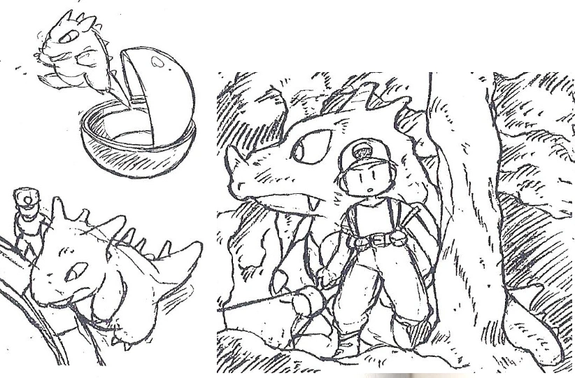
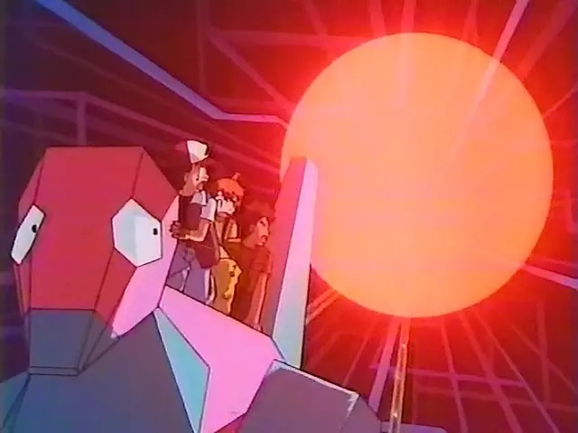
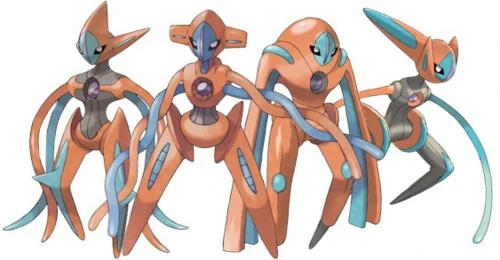

O Primeiro Pokémon
Rhydon é o 112° Pokémon da Pokédex, mas o primeiro no coração de Ken Sugimori. O braço direito de Satoshi Tajiri, criador da franquia, revelou em entrevista que o rinoceronte de pedra foi o primeiro Pokémon criado pela Game Freak. Rhydon aparece em rabiscos conceituais durante o desenvolvimento da primeira geração.
Caso Porygon
Antes mesmo de fazer um enorme sucesso no Brasil, o anime de Pokémon se tornou conhecido por aqui por um motivo pouco honroso: o seu famoso episódio banido, que fez centenas de crianças sofrerem ataques epilépticos no Japão.
Esse episódio se tratava do 38º da série (que já conta com mais de mil) e se chama, em japonês, “Denno Senshi Porygon” (que podemos traduzir como “Porygon, o Soldado Cibernético”). Ele foi exibido no Japão no dia 16 de dezembro de 1997, uma terça-feira. Na sua história, Ash, Misty, Brock e Pikachu descobrem que o sistema de transferência de Pokémon de um Centro Pokémon está com defeito. Após um pedido da enfermeira Joy, foram até a casa do responsável por criar o sistema, o Professor Akihabara. Ele disse que a Equipe Rocket roubou seu Porygon e que entrou no sistema para roubarem mais monstrinhos. O professor acaba enviando os protagonistas para dentro do sistema e eles enfrentam a Equipe Rocket. No entanto, a enfermeira Joy, sem saber que eles estavam no local, enviou um anti-vírus.
Pikachu, então, usa um choque do trovão para destruir os mísseis desse programa anti-vírus, todos fogem do sistema são e salvos e ele volta a funcionar normalmente. ssa cena foi a responsável por ter causado o problema. A explosão desses mísseis causada pelo Pikachu resultou em um flash rápido de luzes vermelhas e azuis, que piscavam de forma intensa. Após essa cena, várias crianças começaram a reclamar de visão borrada, dores de cabeça, tonturas e enjoos. Algumas até sofreram cegueira, ataques epilépticos e convulsões. De acordo com as autoridades, 685 crianças acabaram encaminhadas para hospitais. Boa parte das vítimas se recuperou ainda dentro das ambulâncias, só que em torno de 150 foram hospitalizadas e duas ficaram duas semanas internadas. A notícia logo se espalhou por todo o Japão e pelo planeta. A TV Tokyo, que exibe o anime de Pokémon até hoje, pediu desculpas pelo ocorrido e a animação só voltou a ser exibida em abril de 1998. Denno Senshi Porygon acabou sendo banido pela Nintendo (que era dona da marca) e nunca mais foi exibido novamente. Além disso, o Pokémon cibernético e suas evoluções não foram mais mencionados pela atração. Por conta do ocorrido, desde então, muitos emissoras de TV japonesas sempre colocam um alerta, no início de cada anime, para que as crianças fiquem a uma distância segura da tela e que estejam em um local bem iluminado. O incidente ainda se tornou alvo de paródias na cultura pop. Animações como Os Simpsons e South Park, por exemplo, já fizeram menção ao ocorrido.
Lavender Town
Lavender Town é, sim, assustadora por si só. Mas o principal motivo do local ter se tornado famoso é a creepypasta — ou histórias de terror criadas na Internet — contada sobre ele.
O relato é conhecido como Síndrome de Lavender Town e aborda um suposto surto de suicídios e doenças contraídas por crianças japonesas após o lançamento de Red, Blue e Green em 1996. De acordo com o rumor, os casos ocorreram após as crianças alcançarem Lavender Town, a sexta cidade do game. Em tese, o tema da cidade na versão Green, que era exclusiva do Japão, continha frequências que apenas crianças e pré-adolescentes conseguem ouvir, por terem ouvidos mais sensitivos. Nesse sentido, a estranha e desconcertante música seria responsável pelas calamidades. A creepypasta também afirma que um homem da equipe de efeitos sonoros da Game Freak, conhecido como Satou Harue, teria feito um pacto com um demônio Oni.
Depois dos incidentes e a histeria resultante, a Game Freak teria recolhido as cópias de Green existentes e alterado o tema de Lavender town, de forma que ninguém mais fosse afligido pela sonoridade bizarra. O relato continua que, em 2010, um “software especial” foi usado para analisar o áudio a notória faixa. O programa teria criado imagens de um fantasma ao lado de uma série de Unown – que, estranhamente, só foram apresentados na geração seguinte de Pokémon. Juntos, os Unown da imagem supostamente formavam a frase: “LEAVE NOW” (“saia agora”, em tradução livre).
Bem, vamos aos fatos. O compositor Junichi Masuda mudou, sim, a melodia de Lavender Town algumas vezes, tornando-a mais animada para Pokémon Gold e Silver. A mudança, contudo, provavelmente não tem a ver com a creepypasta. Na segunda geração, a torre Pokémon – casa dos Pokémon de tipo fantasma – foi demolida e substituída pela torre de rádio de Kanto. Sendo assim, o que tornava Lanvender Town “sombria” deixou de existir, o que justifica a música de tonalidade mais alegre. Além disso, dificilmente Satou Harue existe, visto que, pelo visto, não há qualquer registro de que alguém com esse nome tenha trabalhado na Game Freak. A verdade é que a música extremamente calma e arrepiante da cidade de Lavender causou certo impacto nos jogadores.

Vida no Espaço
A sétima geração de Pokémon confirmou a existência de dimensões paralelas na franquia com a introdução de Ultra Beasts. Mas, muito antes do assunto entrar na Pokédex, Pokémon confirmou a existência de vida fora do mundo habitado por Ash Ketchum da cidade de Pallet. Monstros da primeira geração como Clefairy e Starmie são apresentados como extraterrestres nas mídias da primeira geração, enquanto a série digital Pokémon Generations mostra o momento em que a criatura mítica Deoxys vem do espaço para invadir e destruir a Terra.
